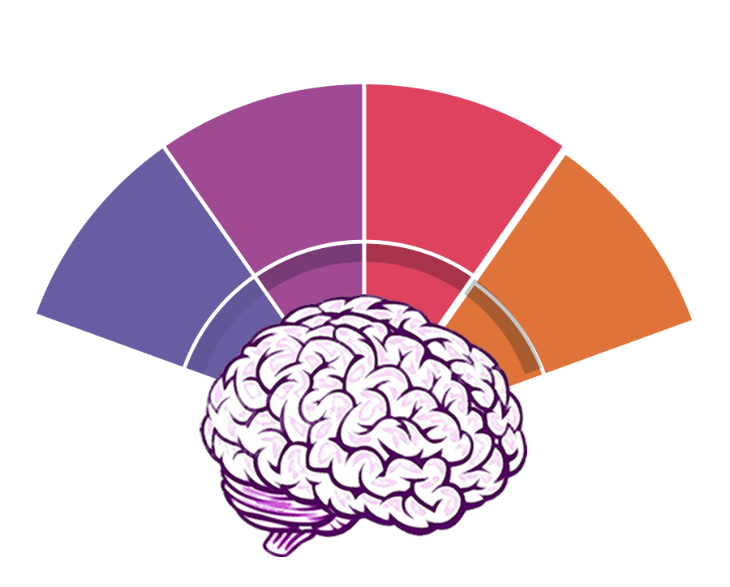

|
Ponderal indeks: 44.09 ORTALAMA DEĞERLERDE/ NORMAL Cormique indeks: 44.09 UZUN GÖVDELİ YAPI Acromi iliak indeks: 44.72 DENGELİ OMUZ KALÇA GENİŞLİĞİ Antropometrik ölçümler sonucu elde edilen Somatokart haritası değerlendirmesinde sporcunun beden tipi mezomorfi ektomorfi olarak belirlenmiştir. Mezomorfi derecesi 4 olarak tespit edilmiştir. Mezomorfi; Kas ve kemik sistemi gelişmiş, dış hatları köşeli tiplerdir. Ektomorfi derecesi 4 olarak tespit edilmiştir. Ektomorfi; incelik ve narinlik baskın görüntülü tiplerdir. Kas oranı az, kollar ve bacaklar uzun, düz karın yapılıdırlar. Proporsiyon analizi sonucunda beden yapısı ortala değerler içinde, alt ve üst gövde oranlandığında uzun gövdeli yapıya sahip ve dengeli omuz kalça genişliği olduğu saptanmıştır. |
|---|
|

Ayak postür incelemesinde; SOL ayağı PRONASYONDA(içe doğru dönme), SOL ayağı NORMAL bulunmuştur. Gözü kapalı denge testinin kötü olması bozulan sol ayak postürü ile gelişen bozulmuş duyu algısı ile açıklanabilir. Ayak postürünün bir parçası olan ayak iç arkı yüksekliği; Sol ve Sağ ayak için NORMAL bulunmuştur. Kısalık testlerinde; kısalık bulunmamıştır. Skolyoz testinde; herhangi anormalliğe rastlanamamıştır. Postür Analizinde; SAĞ taraf OMUZ DÜŞÜKLÜĞÜ görülmüştür. ARTMIŞ LUMBAR LORDOZ görülmüştür. Kas dengesizlikleri, vücut algı bozuklukları gibi durumlar postürde görülen anormalliklere yol açabilir. |
|---|
 Ayak postür incelemesinde; SOL ayağı PRONASYONDA(içe doğru dönme), SOL ayağı NORMAL bulunmuştur. Gözü kapalı denge testinin kötü olması bozulan sol ayak postürü ile gelişen bozulmuş duyu algısı ile açıklanabilir. Ayak postürünün bir parçası olan ayak iç arkı yüksekliği; Sol ve Sağ ayak için NORMAL bulunmuştur. Kısalık testlerinde; kısalık bulunmamıştır. Skolyoz testinde; herhangi anormalliğe rastlanamamıştır. Postür Analizinde; SAĞ taraf OMUZ DÜŞÜKLÜĞÜ görülmüştür. ARTMIŞ LUMBAR LORDOZ görülmüştür. Kas dengesizlikleri, vücut algı bozuklukları gibi durumlar postürde görülen anormalliklere yol açabilir. |
|---|
NOT: Bu karne kesinlikle hastane veya hekim raporu değildir. Sadece alanında uzman kişiler tarafından ölçümlerin yapıldığı gün ve saatte alınan ölçüm değerlerinin norm verilere göre yapılan analiz sonuçlarıdır.